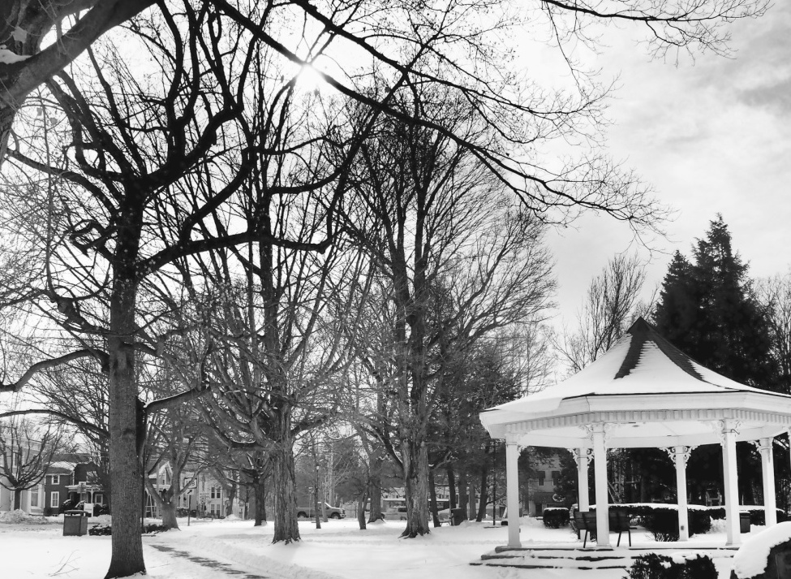
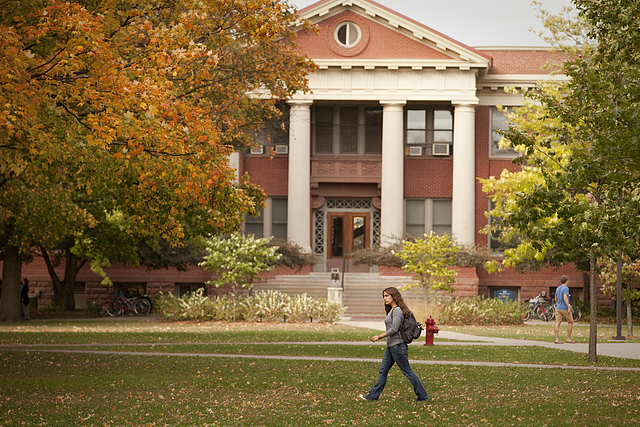
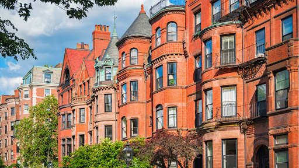

I've been fortunate enough to live in some wonderful places throughout my life. I put them all here with a little bit about what I did there and why I loved it. If you know any of these great spots let me know!
I was an exchange student with the American Field Service in Fortaleza, Brazil during the (US) academic year 2013-2014. I spent the year studying at the Insituto Federal de Ciência e Technologia and living with a host family in the neighborhood Parque de Dois Irmãos. I arrived on Saturday night speaking no portuguese, and got lost taking the bus home on Monday. When I left a year later I was speaking fluently and living comfortably with some of the best friends I have. I do my best to return to these lovely people every few years and was most recently successful during the summer of 2018.
If you are a high school student considering a gap year before starting college I have one piece of advice: Do it! You may never have a time in your life where you have the chance to drop everything and take a chance. If you want more specific advice about your situation, please feel free to contact me.
I grew up in Clinton, New York. Clinton is a small town, most famous for being the home of Hamilton College. If you want to understand how small we're talking, you should know that there are exactly two stoplights in the town. They are on the same street, and you can see one from the other!
Although it lacks the excitement of a big city, Clinton was a wonderful place to grow up. If you ever find yourself in the middle of New York State in the summer or fall, you should absolutely stop by the Clinton Cider Mill for the best apple cider and donuts around.
I love hearing from Clintonites, so let me know if you passed through Clinton and want to talk.

I took a brief break from living in Clinton during the first half of 2005. I lived in Oxford, UK during my break, and attended New Hinskey Elementary. This was my first introduction to city life, and I thoroughly enjoyed improving my football skills, as well as learning to refer to the sport as football, rather than soccer. I also enjoyed expanding my vocabulary with such hits as, "hoover", "bin", and my personal favorite, "posh".
I attended Carleton College in Northfield, MN from 2014 - 2018. Northfield is a beautiful college town just a short drive south of the Minneapolis-Saint Paul metro area, which is home to both Carleton and St. Olaf Colleges.
I found Carleton to be a simultaneously challenging and supportive environment. The liberal arts education I received there allowed me to study diverse subjects, from physics, to linguistics, to english literature, while also getting a rigorous and thorough background in mathematics. Most importantly, I was surrounded by engaged and curious students, and developed close relationships with numerous faculty.
Current students, prospective students, and alumni: please reach out! I love to hear from Carls, and am in particular always interested in knowing what's new in the CMC.

I participated in Budapest Semesters in Mathematics (BSM) during the fall of 2015. BSM is a semester long intensive math program for undergraduate students.
BSM was a great opportunity to expand my mathematical horizons, and also make amazing friends. Friends of mine from the prgoram have since obtained PhDs from UCLA, Michigan, UPenn, and many other fantastic institutions.
In addition to studying, Budapest was perhaps my favorite place to live. The bar scene is fantastic, the food is exquisite, and the city as a whole is beautiful. Plus, you are in the heart of Eastern Europe, which is far too neglected by tourists. While studying at BSM I visited Croatia, Slovenia, Romania, and a number of other wonderful countries to see. I highly recommend the program to ambitious undergraduate mathematicians.

I worked at Analysis Group in Boston, MA from 2018 - 2020. During that time I lived in a few of Boston and Cambridge's finest neighborhoods, including: Back Bay/South End (St. Botoloph Street neighborhood), Allston (briefly), Longwood (briefly), and Central Square in Cambridge.
Boston is absolutely one of the most beautiful cities in the U.S. and has the added bonus of being a short bus ride away from New York if you are looking for something to do.
From August 2020 to July 2026 I lived in Boulder, Colorado. It was here that I completed my PhD, fell in love with the Rocky Mountains, and discovered many of my favorite hobbies including gravel biking, trail running, and backpacking.
I recommend the visiting Boulder in the following seasons for its fantastic weather and unmatched natural beauty: Spring, Summer, Winter, and Fall.
For my post-doc I have moved up the rockies to Calgary, Alberta. Brrrrrr.